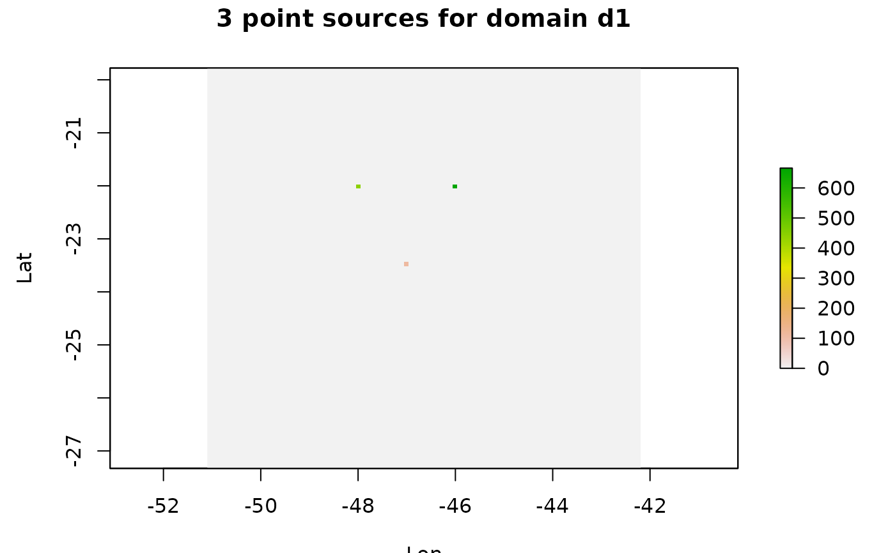

Transform a set of points into a grinded output
See also
gridInfo and rasterSource
Examples
d1 <- gridInfo(paste(system.file("extdata", package = "EmissV"),"/wrfinput_d01",sep=""))
#> Grid information from: /home/runner/work/_temp/Library/EmissV/extdata/wrfinput_d01
p = data.frame(lat = c(-22,-22,-23.5),
lon = c(-46,-48,-47 ),
z = c(0 , 0, 0 ),
emission = c(666,444,111 ) )
p_emissions <- pointSource(emissions = p, grid = d1)
#> grid position lat= -22.010806627171 lon= -46.0152584808041
#> grid position lat= -22.010806627171 lon= -47.9944115841027
#> grid position lat= -23.4723500487625 lon= -47.0048350324534
# \donttest{
raster::plot(p_emissions,ylab="Lat", xlab="Lon",
main = "3 point sources for domain d1")

# }